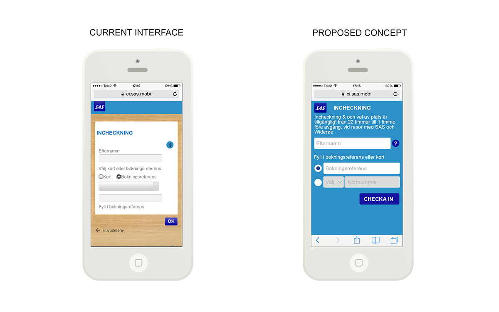

Mobile Check-in
Checking into an SAS flight on mobile, I thought their current UI could be improved. I played around with redesigning larger touch areas and some different flows / transitions in Keynote and Sketch.
Prototyping the check-in flow
SAS Mobile Check-in from Joyce Chow on Vimeo.